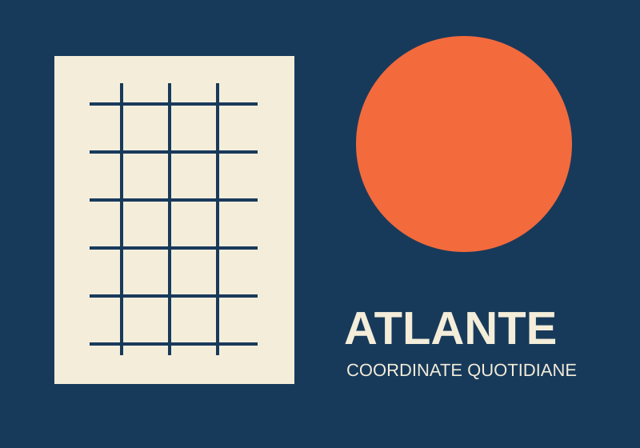
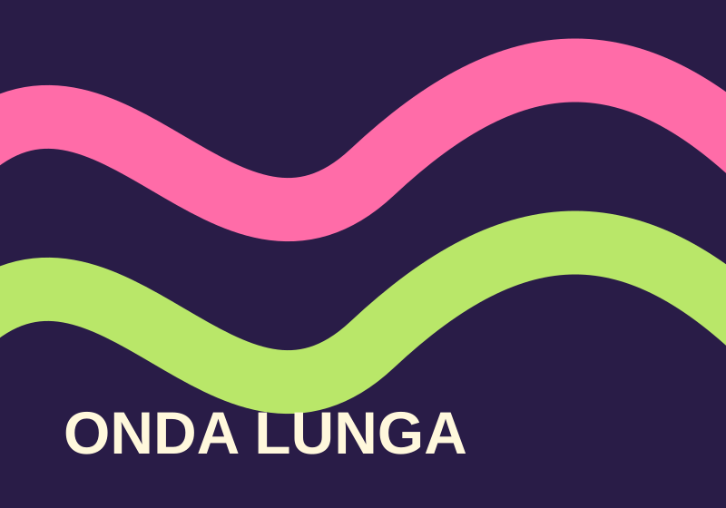

Identità / 2026
Atlante quotidiano
Un sistema editoriale che trasforma la città in una collezione di coordinate.
Il reticolo deriva dalle distanze percorse a piedi durante una settimana.
Identità visive e spazi culturali
Uno studio indipendente che trasforma ricerca, immagini e parole in sistemi visivi chiari.
Due progetti, due modi diversi di creare ritmo.

Identità / 2026
Un sistema editoriale che trasforma la città in una collezione di coordinate.
Il reticolo deriva dalle distanze percorse a piedi durante una settimana.

Exhibition design / 2026
Una mostra sonora in cui tipografia e luce seguono il movimento dei visitatori.
La segnaletica usa soltanto due pesi tipografici e un colore fluorescente.
Come lavoriamo
Costruiamo identità, pubblicazioni e allestimenti insieme a istituzioni culturali e piccole organizzazioni.